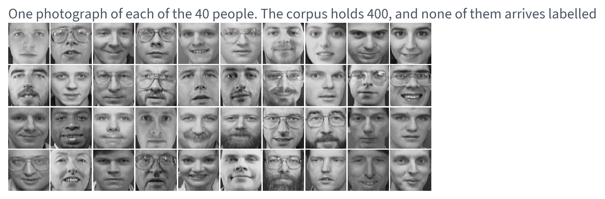
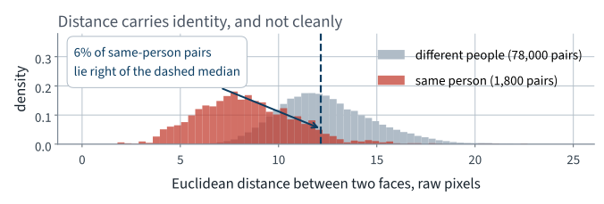
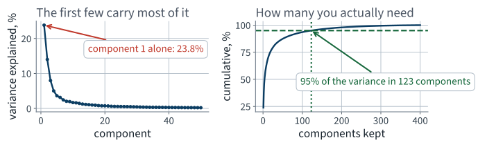
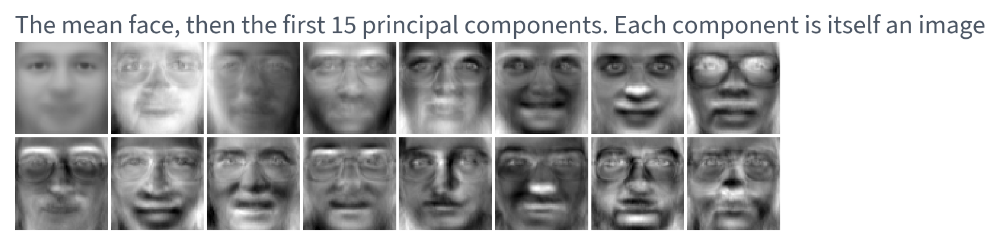
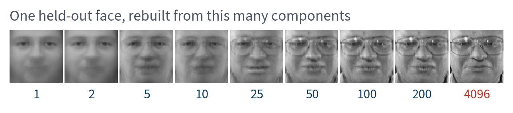
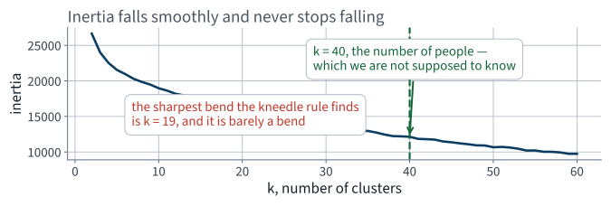
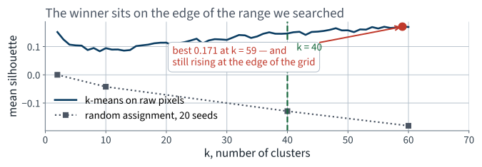
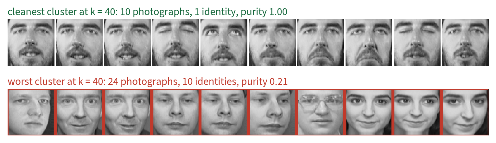

Olivetti faces · four hundred photographs, no labels
Lecture 6 Géron Ch. 7 & 8
Applications of Machine Learning
BSc Mathematics of Artificial Intelligence · Third year
Five lectures, and every one of them was handed the answers:
| Lecture | What the data came with |
|---|---|
| 1–2 · California housing | a price for every district |
| 3 · MNIST | a digit for every image |
| 4 · Titanic | a survivor flag for every passenger |
| 5 · CoverType | a cover type for every plot |
| 6 · Olivetti faces | nothing |
Every model so far was scored against a label. Today there is no target column. That changes what a metric can be, what a baseline is, and how you find out you were wrong.
You have met PCA, k-means and DBSCAN as methods. Today is about where they are used, which one a task calls for, and what goes wrong in practice.
The derivations are in the notes. The slides are about the decisions.
Supervised
Unsupervised
Outside a benchmark, data is cheap and labels are not. Every company has far more rows than it has verdicts about them. Three jobs recur, and every unsupervised method you know does one of them:
| The job | What it buys | The methods |
|---|---|---|
| Find the groups | a handful of segments to act on, one decision per group instead of one per row | k-means, DBSCAN |
| Fewer numbers per item | a model that trains faster, a plot you can look at, a store that fits | PCA, the SVD |
| Flag the unusual | the few rows unlike all the rest, before anyone has labelled a single one | DBSCAN’s noise, a reconstruction error |
And a fourth, quieter use: structure found without labels tells you which few rows are worth paying to label. The worked example ends there.
The marketing team wants a handful of segments, one campaign each, and every account placed in one. The rows are spend, order frequency, basket mix, time since the last order.
| Tool | On this task |
|---|---|
| k-means | a few compact groups, every account assigned, $k$ small because a person has to write a campaign per segment — $k$ is a business decision, and that is what k-means asks for |
| DBSCAN | behaviour data has no empty space between groups, so either most accounts are noise or everything is one cluster; and the team cannot send a campaign to “noise” |
| PCA / SVD | gives axes, not groups; a direction of spend is a description, not a segment anyone can write to |
The fraud team wants the few transactions unlike all the rest, every night, with no labels yet — the disputes that would label them arrive weeks later.
| Tool | On this task |
|---|---|
| DBSCAN | normal behaviour is dense and of any shape — commuters, weekend shoppers, subscriptions — and the output wanted is exactly its noise label: points no dense region claims, with no $k$ to choose |
| k-means | every transaction must belong to a cluster, so an anomaly becomes a far-off member of the nearest one and drags its centroid towards itself |
| PCA | a reconstruction error only catches what leaves the main subspace; a fraudulent transaction that sits in a hole inside it scores as normal |
eps and min_samples together set the density a
cluster must reach; the fraction called noise is a decision the fraud team
must own, not a number the algorithm found.
A search team stores a long vector per product and per query. The downstream model trains too slowly, the index is too large, and nobody can look at the data.
| Tool | On this task |
|---|---|
| PCA | a linear map to fewer numbers that keeps the directions where the vectors differ most, and states the price before you choose how many: the explained variance ratio |
| k-means | replaces every vector by its centroid, so everything that distinguished two products in the same cluster is gone — quantisation, not compression |
| DBSCAN | compresses nothing: it returns a label per row and keeps every column |
A support team has a backlog of tickets and no categories yet. Each ticket is a sparse row of word counts: thousands of columns, almost all zero.
| Tool | On this task |
|---|---|
| Truncated SVD | works on the sparse matrix as it is, and its leading directions are the recurring themes — the words that occur together; then group the tickets in that small space |
| PCA | centres first, which turns a sparse matrix into a dense one that does not fit in memory, for a mean that is mostly zeros |
| k-means or DBSCAN on the counts | in thousands of dimensions every ticket is about equally far from every other: k-means groups by ticket length and the commonest words, DBSCAN finds no dense region and calls everything noise |
| What the consumer needs | The tool | What it assumes |
|---|---|---|
| every item in one of a few compact groups | k-means | convex, roughly equal groups; $k$ given |
| dense regions of any shape, and a “none of these” | DBSCAN | a density that separates groups from the rest |
| fewer numbers per item, with the price stated | PCA | the useful variation is where the variance is |
| themes in a sparse table of counts | truncated SVD | the same, without centring |
Choose by what the consumer of the output can do with it. A segment nobody can write to, a noise label nobody can act on and a component nobody can read are all technically correct and all useless.
The rest of the lecture works one example in full, because every one of these tools has the same failure mode: it does exactly what it was asked, in a geometry that may not be the one you meant.
The worked example
The same shape as the four examples: find the groups, compress to make it feasible, flag what does not belong, and spend the few labels well.
| Quantity | Value |
|---|---|
| Photographs | 400 |
| Distinct people | 40 |
| Photographs per person | 10 |
| Pixels per photograph | 4,096 |
| The whole corpus in memory | 6.6 MB |
Flatten the 64 × 64 grid and a photograph is a vector. Every method today measures a distance between two of them.
Ten times more dimensions than points. Four hundred points cannot fill four thousand dimensions, and that is the first reason to compress before clustering.

Same crop, same lighting rig, same background. What varies between rows is the person — and, as much, the lamp.
y exists. The brief does not have itOlivetti is a benchmark, so it ships with the identity of every photograph. The archive we are pretending to hold does not.
y is used in exactly two ways, both announced on the slide
where they happen: as the forty labels we paid for, and as an
audit, to find out what those forty could not have told us.
Any other use of y is the same error as scoring
on the test set, wearing different clothes. In practice you will have no
y at all — which is why the audit slides matter: they show
what you would not have been able to see.
k-means groups points that are close in Euclidean distance. So one measurement decides whether the rest of the lecture can work (an audit — it uses the hidden labels):
Are two photographs of the same person closer than two photographs of different people?
| Euclidean distance, raw pixels | Pairs | Mean | Median |
|---|---|---|---|
| Same person | 1,800 | 8.38 | 8.15 |
| Different people | 78,000 | 12.41 | 12.15 |
In practice: before you fit anything, measure whether the distance you are about to cluster on tracks the thing you care about. One cell, and it tells you whether you are about to tune or about to hope.

6% of same-person pairs sit further apart than the median different-person pair. Pixel distance is partly identity and partly lighting — and whatever varies most owns the distance.
Centre the data by subtracting the mean face, giving $\tilde{\mathbf{X}}$; among all $d$-dimensional subspaces, PCA picks the one that loses least when the points are projected onto it:
Centre first. PCA does it for you; a
hand-rolled SVD does not, and the uncentred first component is the mean face
— a plausible picture and no error message.

123 components hold 95% of the variance of 4,096 pixels — a factor of 33 fewer numbers per photograph, and the price of the cut is read off the right-hand panel before anything downstream is run.
from sklearn.decomposition import PCA
Z = PCA(n_components=0.95, random_state=42).fit_transform(X)
print(Z.shape) # (400, 123)
n_components=0.95 — a float between 0 and
1 is read as a variance target rather than a component count,
and scikit-learn chooses $d$ for you from the cumulative ratio. Here it
chooses 123.
An integer means “this many components”; a
float means “this much variance”. One character apart, and
n_components=1 and n_components=1.0 do completely
different things. It is the first thing to check in a pipeline you inherit.

A component is a vector in $\mathbb{R}^{4096}$, so it is an image — an eigenface. Look at the first few. They are lighting — exactly what the distance histogram predicted would dominate. Variance kept is not usefulness kept.

Recognisable well before 123 components. Identity survives a compression that the pixel values do not.
n_init times and keep the bestn_init
changed its default between scikit-learn versions, so name it — and
name random_state, or the segments change every time the
job runs.
Convexity. The partition is a Voronoi diagram of the centroids, so every cluster is convex.
Spherical, equal-sized. The only quantity is distance to a centre.
Total assignment. Every point belongs to exactly one cluster; there is no “none of these”.
$k$ is given. Nothing in the algorithm chooses it.
The first three are what DBSCAN drops, and why it was the tool for the transactions. The fourth — choosing $k$ — is what the next slides are about, because in practice nobody tells you $k$.
The sum of squared distances from every point to its assigned centroid — what k-means minimises, and what km.inertia_ reports
In practice: inertia compares two runs at the same $k$ — which restart was best — never two values of $k$.

Inertia — the sum of squared distances to the assigned centroid — can only fall as $k$ rises, and is zero at one cluster per point. A smooth convex curve: the kneedle rule — furthest below the chord, both axes rescaled — picks $k = 19$, the archive has 40, and 46% of the inertia at $k=2$ is still present at $k=40$.
Put every photograph in a uniformly random group, twenty times, and look at the spread. The silhouette has no natural scale, and a number with no null has no units.
| Random assignment, twenty times | Silhouette |
|---|---|
| $k = 10$ | −0.0422 ± 0.0045 |
| $k = 40$ | −0.1288 ± 0.0107 |
| $k = 60$ | −0.1805 ± 0.0124 |
The anchor sits at or below zero, and now you know the width of the noise around it. A silhouette of 0.02 is not a discovery.

A maximum exists. It is also low, and the curve near it is nearly flat — so the chosen $k$ is not decisively better than its neighbours. In practice that flatness is the finding: the data does not insist on a $k$, so the business gets to choose one.

The cleanest and the worst cluster at $k=40$. The bottom row is not a person. It is a lighting condition — several different people lit and posed the same way.
For one cluster $C$, purity is the share of its members that belong to its most common identity:
Read it beside the cluster sizes: a cluster of one photograph is pure by construction, and a very large cluster can be pure only if it swallowed one person entirely. Purity alone rewards over-splitting, exactly as inertia does.
| At $k = 40$, against the hidden identities (audit) | Value |
|---|---|
| Cleanest cluster: 10 photographs, purity | 1.00 |
| Worst cluster: 24 photographs of 10 people, purity | 0.21 |
| Mean purity across the forty clusters | 0.74 |
| Clusters holding exactly one person | 16 |
| Clusters with exactly ten members | 7 |
| Cluster sizes, smallest to largest | 4 to 25 |
Every true group has exactly ten members. The overlap the distance histogram showed before anything was fitted is now a count. In practice you will not have this table — so look at a sample of every cluster, the worst ones first, before anyone names them.
Z = PCA(n_components=0.95, random_state=42).fit_transform(X) # 123
for k in range(2, 61):
km = KMeans(n_clusters=k, n_init=10, random_state=42).fit(Z)
sil.append(silhouette_score(Z, km.labels_))
The clustering code is unchanged. The grid is unchanged, the
seed is unchanged, n_init is unchanged. Only what k-means is
looking at changed: 123 numbers per photograph instead of 4,096.
This is the standard pipeline in practice — reduce, then cluster — and the silhouette is computed in the reduced space, so it is not comparable with the one measured in pixels. A different representation is a different evaluation.
min_samples points lie within eps of iteps of each other are in the same
cluster; so are the non-core points in their neighbourhoods
db = DBSCAN(eps=6.0, min_samples=3).fit(Z)
n_clusters = len(set(db.labels_) - {-1}) # exclude the noise label
In practice: the noise label is the output you wanted
for anomalies and the output you did not want for segments; eps
is in the units of the space you hand it, so it changes when the scaling
does; and DBSCAN has no predict — to label a
new point you fit again, or train a classifier on its output.
By reconstruction error
An image the eigenfaces cannot rebuild is unlike the images that built them. Fit the PCA on the clean corpus, score every image, flag the worst few.
R = pca.inverse_transform(pca.transform(Xa))
err = ((R - Xa) ** 2).mean(axis=1)
By density
DBSCAN’s noise points are the images no dense region claims. That is the transactions example again, on faces.
bad = DBSCAN(eps=6.0, min_samples=3).fit(Z).labels_ == -1
The notebook tests the first by planting twelve corrupted images — four rotated, four dimmed, four double-exposed — and counting how many land in the top twelve, with the detector fitted on the clean corpus only.
Look out for: a detector fitted on data that already contains the anomalies has learned them; and the threshold — how many to flag — is a decision about the cost of a missed one against the cost of a false alarm, not a number the method knows.
Split the corpus 280 / 120, stratified by identity. We may label forty of the 280 training photographs. Where we spend them turns out to matter more than what we do with them.
km.transform(Z).argmin(axis=0)Same classifier, same held-out faces, twenty splits. The only thing that varies is which forty were labelled.
| Labels used | Held-out accuracy | sd over 20 splits |
|---|---|---|
| 40 at random | 48.1% | 3.8% |
| 40, one per cluster | 60.5% | 4.8% |
| Propagated to the whole cluster | 55.6% | 4.8% |
| Propagated to the closest 75% | 55.1% | 4.9% |
| All 280 true labels | 97.4% | 1.6% |
Twenty splits, because the differences between the middle three rows are of the same order as their spread — and a comparison that turns on less than the spread is not a comparison.
Propagation buys 280 labels from 40 and does worse than the 40 alone, because a wrong propagated label is worse than no label. Report that, do not bury it — it is the commonest shortcut in a labelling budget, and it is a loss.
| Situation | What goes wrong | Do this |
|---|---|---|
| Columns in different units | distance is owned by the largest unit; the segments are “spend” | scale before any distance, and keep the scaler with the model |
| Something dominates the variation | the clusters and the leading components are that thing — a lamp, a season, a device | measure first whether distance tracks what you care about; change the representation, not the algorithm |
n_components as an integer or a float | a count or a variance target, one character apart | read it aloud in every pipeline you inherit |
| The two-dimensional plot | a projection; distances on it are not distances in the data | use it to look, never to measure |
| Situation | What goes wrong | Do this |
|---|---|---|
| Nobody told you $k$ | inertia always prefers more; the silhouette is flat near its maximum | read it against a random anchor; then let the consumer choose among the flat candidates |
| A clean mean silhouette | one cluster can be a lighting condition, a region, a device | look at a sample of every cluster, worst first, before naming any |
| The job reruns next month | different seed, different segments, different names | fix n_init and random_state; check stability across resamples before trusting a segment |
| DBSCAN after rescaling | eps was set in the old units | treat eps as part of the representation; and remember it cannot predict |
| Anomalies in the training data | the detector has learned them | fit on data believed clean; the threshold is a cost decision |
| A labelling budget | propagated labels cost more than they buy | spend labels on representatives; report the loss, do not bury it |
n_components=0.95 to 0.99, which takes $d$
from 123 to 260. The sweep slows by roughly the ratio of the two, and
what k-means finds barely moves — which is the whole trade-off in one
edit.
Design exercise · in the manner of an ML system-design interview
Nine steps follow, each with the pitfall that catches a first attempt and what to do about it. The model at the centre is today’s: PCA to reduce the dimension, then k-means, with $k$ chosen without labels.
n_components choose $d$ from the
cumulative variance ratio — an integer would say how manyn_init
and keep the best of several restarts, because it converges to a local
minimum that depends on the startpredict for a new account.
Order log → one row per account, shares and rates → held-out accounts → scaler and PCA in a pipeline → k-means with restarts → silhouette against the random anchor → stability across resamples → profiles and representatives → anomaly scores → a holdout; refit by season.
| Pitfall | Address it by |
|---|---|
| Geometry read as people | deciding what will be looked at before fitting |
| The largest unit chooses the segments | shares and rates; a scaler fitted on the training accounts |
| Variance kept read as usefulness | reading every kept component in the columns |
| Equal convex cells on an unequal crowd | sizes and the silhouette diagram; a mixture or DBSCAN |
| The elbow, or a silhouette with no units | the silhouette against a random anchor, with its noise |
| Segments that move on every refit | the share of accounts that keep their segment across resamples |
| A story written on a centroid | profiles in measured columns; the interviews spent on representatives |
| Every account assigned, in every season | density or reconstruction scores; a rolling refit, compared |
Not presented — for afterwards
five, in the style of the written paper
Solutions on Lecture 7’s deck.
Solutions on Lecture 7’s deck.
The five set at the end of Lecture 5
not part of this lecture
1. For $n$ predictors each of variance $\sigma^2$ and pairwise correlation $\rho$, the variance of their average…
It tends to $\rho\sigma^2$ — correlation, not ensemble size, sets the floor.
2. Bagging measures $\rho = 0.072$ with one member at 78.8% accuracy; the random forest measures $\rho = 0.043$…
Lowering $\rho$ is not free. The forest lowers it by letting each split see only 7 of 54 columns, which handicaps every member, and the formula is about variance alone: $\sigma^2$ sits in both terms and bias is not in it at all.
3. You set bootstrap=False and oob_score=True. State what happens and why.
It raises: with no bootstrap there are no out-of-bag rows.
4. Impurity importance ranks a column of random numbers tenth of 55; permutation importance on held-out data…
Shuffle one column of the held-out set, re-score the fitted model, and report the fall in accuracy, repeated for a spread. A random column carries no information the model can use on new rows, so shuffling it costs nothing.
5. A forest improves accuracy over one tree by far less than the variance reduction would suggest. Is this a…
No — variance is only one term of the error.
Lecture 7 · Géron Ch. 9
Back to labels: ten classes of small greyscale images, and a pixel as a feature
The multilayer perceptron, and why a stack of linear layers is a linear model
A layer in matrices, softmax and cross-entropy, and the parameter count before the fit
A network fitted and tuned by hand — and the four walls fit() puts round you
Run the Lecture 6 notebook first